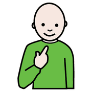
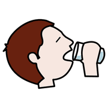
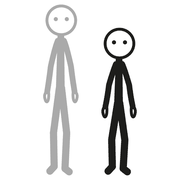
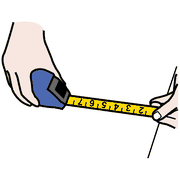
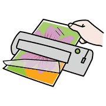
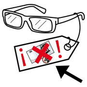

Primo incontro, modulo 2
Boardmaker passo passo
Il programma più diffuso per preparare materiali di CAA: che cosa lo distingue, come si costruisce una tavola e quali errori evitare.
Che cos'è Boardmaker
 computer
computer pittogrammi
pittogrammi tabella
tabellaBoardmaker (Tobii Dynavox) è un programma pensato apposta per la CAA, diverso da un normale archivio di immagini:
- una libreria di simboli (PCS) coerente e collaudata con bambini;
- strumenti dedicati per tavole, PECS, storie sociali e cartelli;
- lo stesso stile grafico in tutti i materiali della scuola.
una griglia
2 per 3
Creare una tavola in quattro passi
- Cerca il simboloPer parola, categoria o sinonimo: «pranzo», «mangiare» e «cibo» portano allo stesso simbolo.
- Scegli la grigliaPer iniziare va benissimo una griglia semplice da 2 per 3.
- Inserisci i simboliParti da una routine vera della tua sezione.
- Aggiungi il testoSotto il simbolo, carattere senza grazie, 18-24 punti, mai corsivo.

io voglio
voglio mangiare
mangiare
bere giocare
giocare aiuto
aiutoDimensioni delle celle
 grande
grande
piccolo
misurare| Chi | Celle | Quanti simboli |
|---|---|---|
| Infanzia, 3-4 anni | grandi, almeno 8 per 8 cm | 4-6 |
| Infanzia 5 anni e prima primaria | medie | fino a 9-12 |
| Bambini con difficoltà motorie | sempre grandi | pochi, ben distanziati |
dalla
chiave di
Fitzgerald
Un colore per categoria
Il codice colore che deriva dalla chiave di Fitzgerald (1926) dà a ogni categoria di parole un colore della cornice. Il bambino riconosce il tipo di parola anche prima di saper leggere.
mangiarepalla contento
contento sì
sìControllate se il programma lo applica da solo o se va impostato. Con bambini sensibili ai colori, meglio poche tinte tenui.
Stampa o digitale
 stampare
stampare
plastificare tablet
tabletStampa plastificata
Per le routine fisse: si appende dove serve e resiste all'uso.
Tablet o LIM
Per i contenuti che cambiano spesso.
I modelli già pronti (accoglienza, pasto, bagno) sono un buon punto di partenza da personalizzare.
si vedono
spesso!
Errori da evitare
 attenzione
attenzione sbagliare
sbagliare tanti
tanti- Troppi simboli in una tavola
- Poco contrasto tra simbolo e sfondo
- Stili diversi da una tavola all'altra
- Testo troppo piccolo
Provarlo gratis
computer
gratisBoardmaker si può provare gratuitamente per un periodo limitato dal sito ufficiale myboardmaker.com. La prova è il modo più rapido per capire se risponde ai bisogni della scuola prima di acquistare le licenze.
I simboli PCS sono proprietà di Tobii Dynavox e si usano con la licenza del programma. I pittogrammi ARASAAC, usati da AraWord, sono invece gratuiti con licenza Creative Commons.